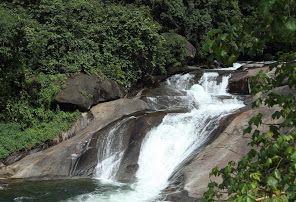

Malappuram

Malappuram (also Malapuram) is a city in the Indian state of Kerala, spread over an area of 33.61 km2 (12.98 sq mi). The first municipality in the district formed in 1969, Malappuram serves as the administrative headquarters of Malappuram district. Divided into 40 electoral wards, the city has a population density of 2,083 per square kilometre (5,390 per square mile). As per the 2011 census Malappuram Urban Agglomeration is the fourth largest urban agglomeration in Kerala state with a total population of 1,698,645. Malappuram is situated 54 km southeast of Calicut and 90 km northwest of Palakkad.
Places to visit
1.Adyanpara Falls
Adyanpara Falls is a cascading waterfall in the Kurmbalangodu village of Nilambur taluk in Kerala, India. It is 14 kilometres from Nilambur town, and attracts tourists from various parts of Kerala. This is a seasonal waterfall. During Summer, water flow is low. This waterfall is of a natural cascading style as the waterfall descends over the rock.
2.Teak Museum
Teak Museum is located 4 km from Nilambur, a town in the Malappuram district of Kerala, South India. Teak occurs naturally in India with the main teak forests found in Kerala. The museum, a two-storey building, is the world's first teak museum and is operated by the Kerala Forest Research Institute. The exhibits include comprehensive information on aspects of the use of teak in their exhibits and articles on the subject. The museum provides extensive information of value historically, artistically and scientifically.